Internet Download Manager¶
2016-01-04 23:29:01
Internet Download Manager（简称IDM）是一个用于Windows系统的下载管理器
功能：
- 自动下载互联网上的任何文件类型
- 多个数据流下载时使用更快的下载划分
- 批量下载
- 导入/导出下载工作
- 自动/手动更新下载地址
- 支持队列操作
- 拥有近期下载列表，方便访问文件
- 从流媒体视频网站下载视频
- 动态分段整个下载过程
- 支持协议HTTP,FTP,HTTPS,MMS和微软的ISA
巧用防火墙屏蔽验证¶
IDM 享有30天的免费试用，本章主要讲解屏蔽IDM的验证
原谅我只是一个穷码农，只为分享交流学习，本教程只用于交流学习，不得用于任何商业行为。
有能力的朋友，请购买正版！
原理¶
通过防火墙阻断IDM连接自家的网站去验证安装在本机上的IDM序号是否有效，也就是说不是破解他本身的注册机制，而是拦截验证而已
Note
相关：hosts阻断，防火墙阻断，打补丁方式都是阻断软件通过连接自家网站验证序号是否合法可用
- hosts：全局禁用，把IDM自家所有网站都指向127.0.0.1这个本地地址
- 防火墙：只禁止IDM这个程序本身，连接自家网站验证，并不影响你访问IDM的网站，同时也避免hosts修改问题（比如防病毒软件提示风险）,可支持手动覆盖更新安装
- 打补丁：通过修改IDM程序软件本身，修改程序本身的网站指向或者去掉序号联网验证功能
相关：软件正版验证方法
- 低等：提取诸如MAC地址、计算机名等，再组合加密变换，或根据用户名进行计算所
- 中等：网络验证，服务器保存key列表，用户输入正版key后连接服务器检索验证，成功则返回正确标识，以及离线的data文件等；
- 高等：加密狗、驱动等。
测试环境¶
- 测试版本：IDM 6.25 build 10
- 系统版本：Windows 10 64Bit
软件安装¶
- 没什么好说的，下一步，下一步，完成...
- 安装完成，会自动检测你的系统语言
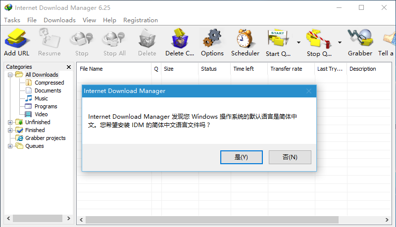 - 安装过程
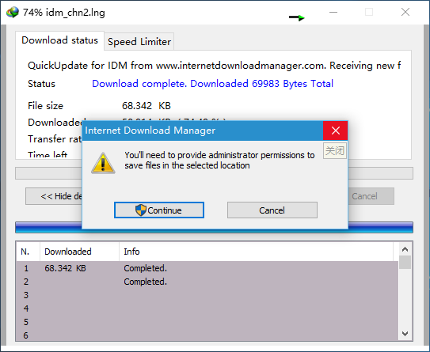 - 系统对应语言安装完成，重启IDM
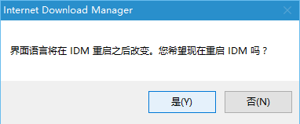
屏蔽过程¶
- 打开网络和共享中心
- 方法一：网络连接图标（右键）>打开网络和共享中心
- 方法二：控制面板>网络和 Internet>网络和共享中心
- 打开Windows防火墙（网络和共享中心页面，左下角）
- 建立防火墙出站规则
- 高级设置>出站规则>新建规则
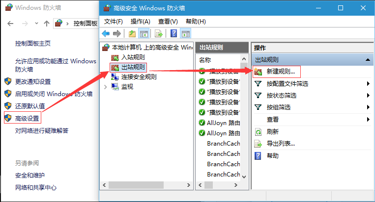
- 高级设置>出站规则>新建规则
- 定位IDM安装路径
- 程序>定位安装路径>下一步
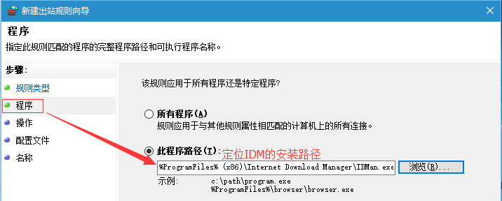
- 程序>定位安装路径>下一步
- 选择“阻止链接”
- 全选“域”，“专用”，“公用”
- 名称：自定义，如：IDM阻断，描述：可不写；完成
- 添加阻断iP地址
- 选择“IDM阻断”（右键）>属性
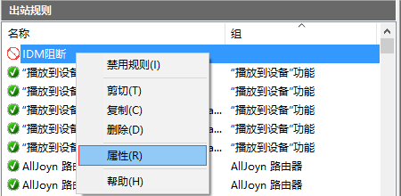 - 添加阻断iP地址，应用
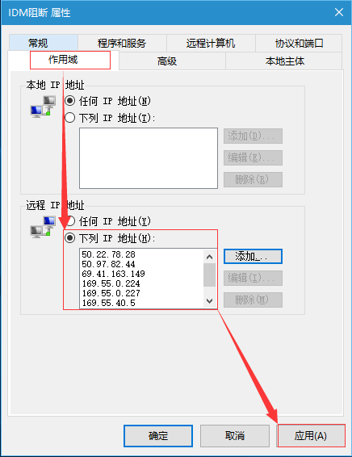
- 选择“IDM阻断”（右键）>属性
- 注册，完工
- 注册（菜单栏）>注册；内容不重要了，毕竟已经阻断IDM访问验证的iP；序列号：10Z5R-MI9H5-WLASO-1H46W（其他已经不能注册）
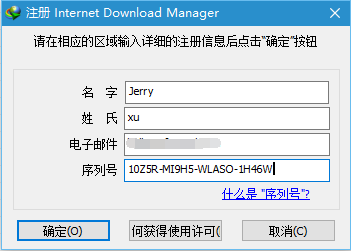 - 确定，会弹出提示，无视关闭
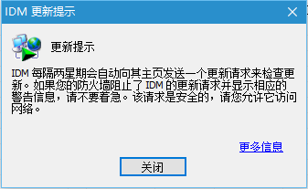 - 帮助>关于IDM，参看注册信息
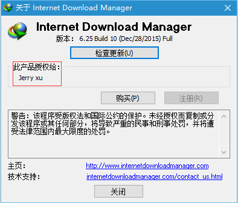
- 注册（菜单栏）>注册；内容不重要了，毕竟已经阻断IDM访问验证的iP；序列号：10Z5R-MI9H5-WLASO-1H46W（其他已经不能注册）
注意：¶
Warning
无法屏蔽弹框原因
- 可能IDM软件非官网纯净应用
- 可能防火墙问题：检查自己的防火墙是否开启（可能第三方应用应用关闭了系统防火墙）
- 可能曾安装过破解版或其他原因：注册表中保留了以前的键值，需要删除注册表信息，重新安装
[HKEY_CURRENT_USER\SOFTWARE\DownloadManager][HKEY_LOCAL_MACHINE\SOFTWARE\WOW6432Node\Internet Download Manager]
补充¶
手动设置系统墙日志，用于查看IDM都连接了那些iP地址
- 一般防火墙日志存放路径：C:\Windows\System32\LogFiles\Firewall
- 如果没有，自行设置
- Windows防火墙>高级设置>左侧导航栏：本地计算机上的高级安全Windows防火墙（右键）>属性
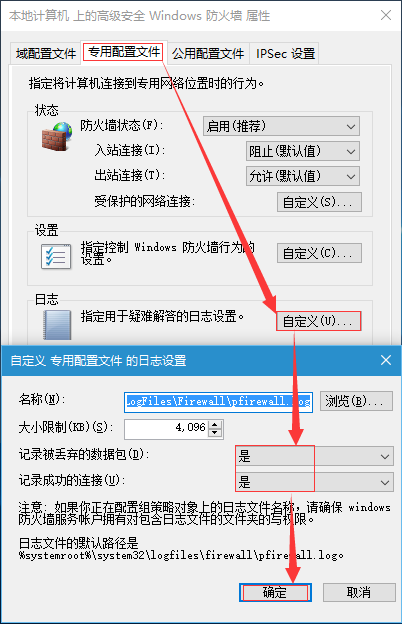
- Windows防火墙>高级设置>左侧导航栏：本地计算机上的高级安全Windows防火墙（右键）>属性
- 手动加入阻断IDM验证的防火墙iP地址即可，屏蔽过程第8步
参考：本教程是我无意从IDM贴吧看到，做了整理。由sasalemma分享